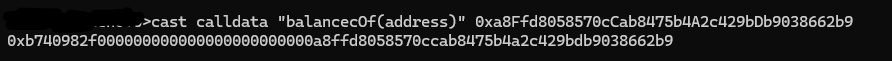

memory典例分析&内存安全
Memory 典例分析&内存安全
#1 SafeProxy.sol
案例代码：
/// @dev Fallback function forwards all transactions and returns all received return data.
fallback() external payable {
// solhint-disable-next-line no-inline-assembly
assembly {
@> let _singleton := sload(0)
// 0xa619486e == keccak("masterCopy()"). The value is right padded to 32-bytes with 0s
if eq(calldataload(0), 0xa619486e00000000000000000000000000000000000000000000000000000000) {
@> mstore(0, shr(12, shl(12, _singleton)))
return(0, 0x20)
}
@> calldatacopy(0, 0, calldatasize())
@> let success := delegatecall(gas(), _singleton, 0, calldatasize(), 0, 0)
returndatacopy(0, 0, returndatasize())
if eq(success, 0) {
revert(0, returndatasize())
}
return(0, returndatasize())
}
}首先在第五行中通过 sload(0) 来读出 slot 0 位置的数据，这个位置存储的 Logic Contract 的合约地址，但是，一个合约地址的大小是 0x20 (uint 160)，直接读取 slot 0 的数据可能存在 dirty data。
第一个 if 循环中，首先根据 calldata 来判断是否调用的masterCopy()函数，如果是则返回 Logic 合约的地址。如上所说，最开始可能存在 dirty data,所以在，代码第八行中的mstore(0, shr(12, shl(12, _signleton))) 对于 _signletion 采取了先左移 12 位然后再右移 12 位，左移 0x12，首先移出了前 12 字节的数据，然后再进行右移 12，使得恢复成原来的格式，这样保证了不存在 dirty data。然后通过mstore(0, _)将得到的纯净地址存储到 memory 中0x00 的位置。最后通过return(0, 0x20)返回刚刚计算到的干净的合约地址。
return(0, 0x20)：返回 memory 中从 0x00 位置开始，长度为 0x20(32字节) 的数据，
在后面的calldatacopy()中，复制了整个的 calldata 数据
calldatacopy()各参数及其含义：
destOffset: byte offset in the memory where the result will be copied. 结果将被复制到内存中的字节偏移量
- 即：要将calldata 复制到内存中的那个位置
offset: byte offset in the calldata to copy. calldata 中要复制的字节偏移量。
- 对 calldata 进行的偏移量大小
size: byte size to copy. 要复制的字节大小。
- 要复制的 calldata 的数据大小（上面的
calldatasize()会返回 calldata 的大小是多少）例子：evm.code
然后进行 delegatecall 委托调用。
delegatecall()各参数及其含义：
gas: 上下文执行最多花费的 gas 的量 (上文的gas()函数会获取当前交易剩余的 gas 数量)address: 要进行委托调用的地址argsOffset: 内存中要进行委托调用的 calldata 的偏移量argsSize: 要复制的 calldata 的字节大小retOffset: 内存中用来存放返回值的偏移量retSize:返回值的大小（字节为单位）该字节码存在返回值，成功调用将 1 压入堆栈（return 1），失败将 0 压入堆栈（return 0）。
在上文中，他并没有直接获取函数调用的返回值（最后两个参数都是0），而是在另一行使用了returndatacopy()来存储委托调用的返回值。（大致原因我个人认为是在进行 delegatecall 之前，并不知道实际的 returndatasize，所以再完成 delegatecall 之后在，在一个独立的行读取返回值）
returndatacopy()的运作方式和上文的calldatacopy()大致相同
然后进行 if 判断，失败回滚，并返回错误信息；成功返回函数的返回值。
#2 SafeBalanceOf
github 仓库：https://github.com/Vectorized/solady/blob/main/src/utils/SafeTransferLib.sol
案例代码：
/// @dev Returns the amount of ERC20 `token` owned by `account`.
/// Returns zero if the `token` does not exist.
function balanceOf(address token, address account) internal view returns (uint256 amount) {
/// @solidity memory-safe-assembly
assembly {
mstore(0x14, account) // Store the `account` argument.
mstore(0x00, 0x70a08231000000000000000000000000) // `balanceOf(address)`.
amount :=
mul( // The arguments of `mul` are evaluated from right to left.
mload(0x20),
and( // The arguments of `and` are evaluated from right to left.
gt(returndatasize(), 0x1f), // At least 32 bytes returned.
staticcall(gas(), token, 0x10, 0x24, 0x20, 0x20)
)
)
}
}它以一种更动态的方法使用 Memory，以更加有效将内容存入较小的 Memory 位置，因为分配的 Memory 位置越大，消耗的 gas 越多。
首先他将账户地址存储到了0x14的位置，不过，mstore存储的永远是32个字节，也就是说实际上存储的 account 是在传入的 accout 参数前补码 0 （补 12 字节的 0）来达到 32 字节的大小。然后又使用mstore将balanceOf(address)的函数选择器（这里的长度是16字节，也是要补码到32字节，前面补0，补 16 字节的0）存储到偏移为0x00的位置（也是存储了 32 字节）这里就比较抽象了，此时的 memory 布局如下：
然后下一行中，首先执行 staticcall()
staticcall()和上面的delegatecall()参数类似
他这里的设计十分巧妙：staticcall(gas(), token, 0x10, 0x24, 0x20, 0x20)
staticcall 的 calldata初始便宜0x10，长度0x24（也就是到 0x34）这样得到了：0x70a08231000000000000000000000000a8ffd8058570ccab8475b4a2c429bdb9038662b9。
通过 foundry 验证一下：

完全一致。
下一步便是将返回值存储在0x20 的位置，长度是 32 bytes（0x20 -> 32）。
这个时候的 memory 便变成了一下布局：
如果成功完成staticcall这时候就变成了：amount := mul( mload(0x20), and( gt(returndatasize(), 0x1f), 1))
调用失败即为：amount := mul( mload(0x20), and( gt(returndatasize(), 0x1f), 0))
- 首先分析调用失败：
调用失败时，无论gt(returndatasize(), 0x1f)的结果，与 0 取and结果还是为0，那就变成了mul(mload(0x20), 0)(0x20对应的值 * 0 = 0)，即 amount = 0。 - 调用成功时：
调用成功时，gt(returndatasize(), 0x1f) -> gt(0x20, 0x1f) ->1->and(1,1)->mul( mload(0x20), 1)->amount := mload(0x20)
关于
gt(returndatasize(), 0x1f)的检测问题：在staticcall中的参数设置：解析
staticcall及后续操作
- 参数解释：
staticcall(gas(), token, 0x10, 0x24, 0x20, 0x20)中，最后两个0x20表示期望的返回数据的起始内存位置和期望的大小（均为32字节）。- 返回数据处理：调用期望返回一个
uint256（即32字节大小的整数），这是标准ERC20代币的balanceOf函数的返回类型。对
returndatasize()的检查：
returndatasize()：这个操作返回实际的返回数据大小，不一定总是与预期的32字节相匹配。调用失败或合约异常可能导致返回数据大小不符。gt(returndatasize(), 0x1f)：这实际上是检查返回的数据是否至少为32字节。0x1f（十进制的31）是用于确保至少有32字节，如果小于这个值，表示返回数据有问题或不完整。安全性和健壮性
- 避免错误数据的处理：在区块链和智能合约的上下文中，保守的编程—检查每一个假设—是非常重要的。尽管
staticcall设置了期望的返回数据大小，但在实际处理返回数据之前进行验证是一种常见的做法，用以增加代码的健壮性。- 处理调用失败：在某些情况下，即使调用返回错误或异常（例如被调用的合约抛出异常而非正常返回），EVM仍然可以返回数据。因此，检查
returndatasize()可以帮助区分正常响应和非正常响应。(上述回答来自 ChatGPT4)
内存安全
首先简短的回顾一下 Memory 的布局：
实际上，关于内存安全，主要包括了以下内容（当我们离开了内联汇编(assembly)代码块或者函数回滚时（或函数末尾时），以下内容是否是正确的）：
- 空闲内存指针是否始终准确的指向未分配的内存位置
- 是否覆盖了之前已经分配的 Memory？（仅在空闲内存指针之后修改，我们不能修改超过 0x80 位置的数据，因为可能会重写覆盖，除非提前缓存）
zero slot的值是否还是为 0（类似于未初始化的动态数组，其中没有任何内容）
因此在安全传输的情况下，我们首先缓存空闲内存指针，因为有些时候会在0x40的位置写入，这个位置就是空闲内存指针的位置，会覆盖掉之前的内存空闲指针的值。
#3 safeTransferFrom
举例：https://github.com/Vectorized/solady/blob/main/src/utils/SafeTransferLib.sol
function safeTransferFrom(address token, address from, address to, uint256 amount) internal {
/// @solidity memory-safe-assembly
assembly {
@> let m := mload(0x40) // Cache the free memory pointer.
mstore(0x60, amount) // Store the `amount` argument.
mstore(0x40, to) // Store the `to` argument.
mstore(0x2c, shl(96, from)) // Store the `from` argument.
mstore(0x0c, 0x23b872dd000000000000000000000000) // `transferFrom(address,address,uint256)`.
// Perform the transfer, reverting upon failure.
if iszero(
and( // The arguments of `and` are evaluated from right to left.
or(eq(mload(0x00), 1), iszero(returndatasize())), // Returned 1 or nothing.
@> call(gas(), token, 0, 0x1c, 0x64, 0x00, 0x20)
)
) {
mstore(0x00, 0x7939f424) // `TransferFromFailed()`.
revert(0x1c, 0x04)
}
@> mstore(0x60, 0) // Restore the zero slot to zero.
@> mstore(0x40, m) // Restore the free memory pointer.
}
}
- 第4行中，首先缓存了空闲内存指针的值
let m := mload(0x40)，因为后面在0x40，空闲内存指针的位置进行了重写覆盖，虽然我们修改了空闲内存指针的值，不过最后，我们还原了空闲内存指针的值mstore(0x40, m)（满足了上面内存安全的第一点） - 因为我们最多涉及到的 Memory 位置为
0x60，没有超过0x80，我们的用户不会使用 Memory 中0x80之前的位置，所以我们没有覆盖之前已经分配的 Memory（满足上面内存安全的第二点） - 我们还原了
zero slot的 0 值mstore(0x60, 0)（满足了上面内存安全的第三点）
我们来对上面的这个例子进行分析：
关于 if 判断部分，由于 and 操作是从右往左，所以会先执行 call() 操作，这个时候根据 call() 的返回值，再和or( eq(mload(0x00), 1), iszero(calldatasize() ) 的结果取和
如果 transferFrom 调用成功，返回值为 Ture，即 0x00 字段的值为1，反之，没有返回值，即 0x00 字段值为0。
- 调用成功时：
- call 返回值：1
or( eq(mload(0x00), 1), iszeroreturndata() ) -> or(1, 1) -> 1and(1, 1) -> 1iszero(1)不执行 if 语句中的内容mstore(0x60, 0)还原zero slot的零值mstore(0x40, m)还原空闲内存指针的值
- 调用失败时：
- call 返回值：0
or( eq(mload(0x00), 1), iszeroreturndata() ) -> or(0, 0) -> 0and(0,0) -> 0iszero(0)执行 if 语句中的内容mstore(0x00, 0x7939f424)， 0x7939f424 ->TransferFromFailed()revert(0x1c, 0x04)返回从0x1c开始，长度为0x04的错误信息，并回滚（刚好对应上一步存储的错误信息）